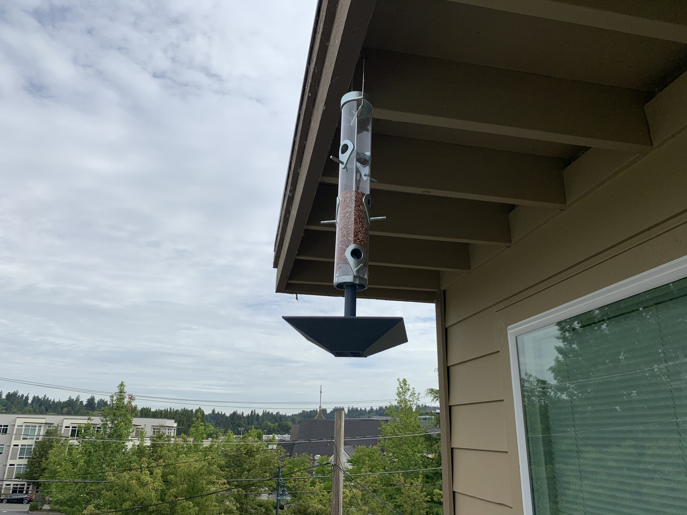
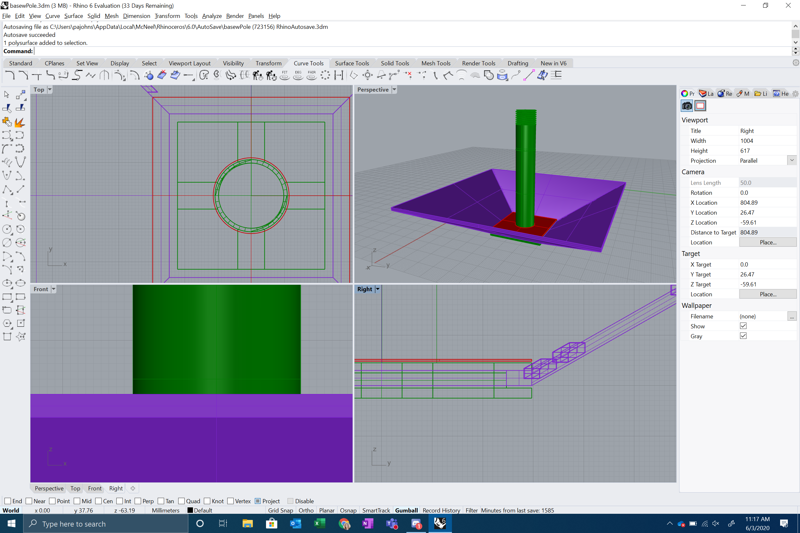
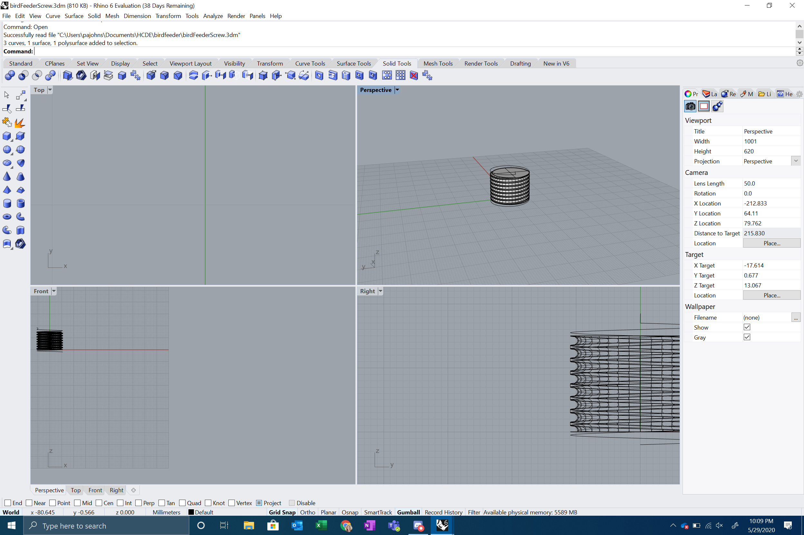
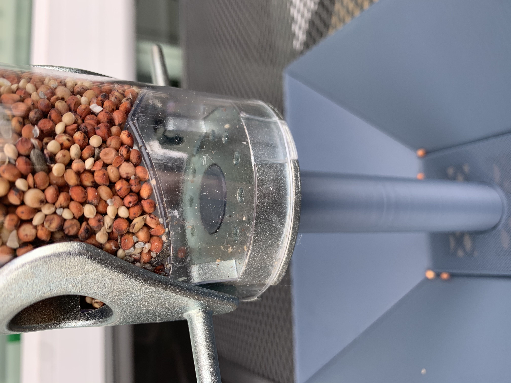
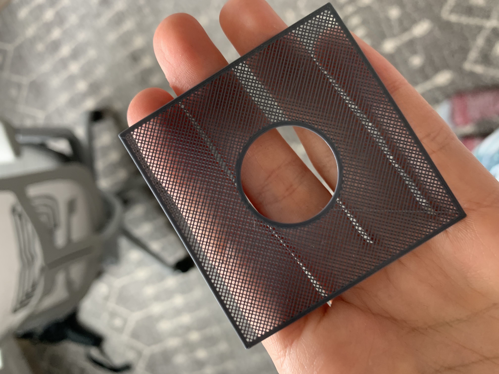
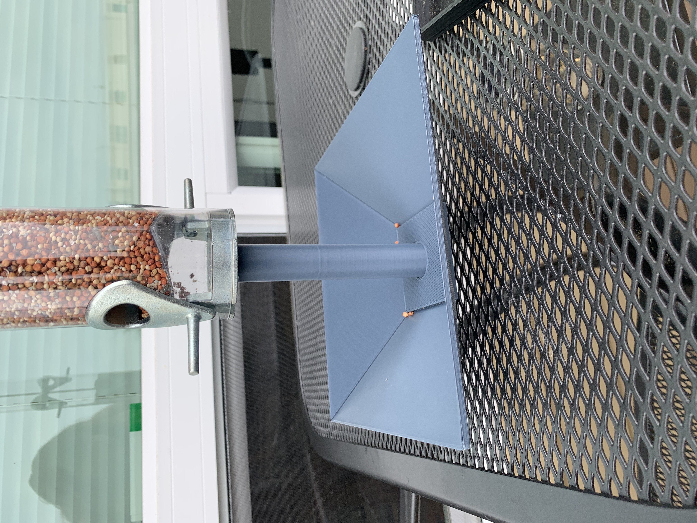

Final Project
I did it! I'm not the worst upstairs neighbor!
.
The feeder is fundamentally built out of three different prints. The sides are one (printed four times), pole is another, and lastly the mesh.

Here you can see the three distinct pieces in Rhino. For the sides, I created a truncated pyramid, exploded it, and used one side to extrude a side for the tray. From there I created surfaces on the very edges to extrude on one side, and cut out holes in the other, to create tabs that would snap the side pieces together. The bottom also has a lip that the pole uses to slide on to.

The screw threads were made with "Sweep along rails" and following this tutorial: here. I used the bottom of the calipers to measure the distance between threads.

Here you can see it screwed into the bottom.

To create the mesh, I created a solid that was .4 mm high. In the slicing settings, I removed the top and bottom layers, set the infill to "lines" and about 60% density. I had to print really slowly to have it come out perfect.

It turned out really well!

Here it is finished.